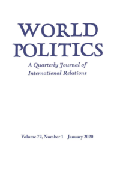
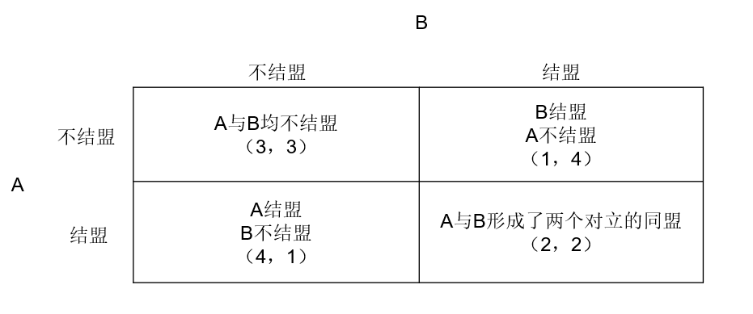
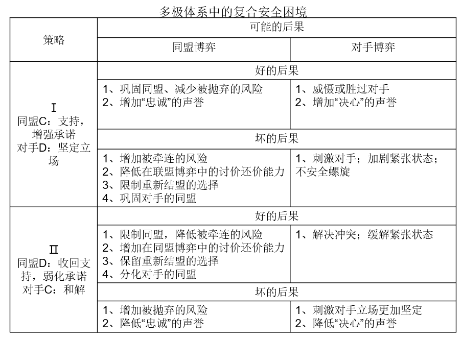

收录于合集 #理论研究 96个
作品简介
【作者】 格伦·斯奈德(Glenn H. Snyder)，北卡罗莱纳大学教堂山分校政治学教授，国际关系理论与安全研究领域著名学者，著有《Alliance Politics》等国际关系著作。
【 编译】 王川 (国政学人编译员，吉林大学)
【校对】 施榕
【审核 】 崔宇涵
【排版】 梁鑫昱
【 来源 】 Glenn H. Snyder. (1984). The Security Dilemma in Alliance Politics. World Politics, 36 (4), 461-495.
期刊介绍

World Politics （《世界政治》）创刊于1948年，是国际著名的政治科学季刊，内容涵盖国际关系和政治学各个领域，由剑桥大学出版社代表普林斯顿国际和区域研究所出版，主编是德博拉·亚沙尔（Deborah J. Yashar）。该刊欢迎具有理论和实证贡献的研究类文章，以及有关国际关系和比较政治问题的评论性文章投稿。2018年该期刊的影响因子为3.368，在国际关系类别的91种期刊中位列第7名，在政治科学类别的176种期刊中位列第15名。
同盟政治中的安全困境
The Security Dilemma in Alliance Politics
Glenn H. Snyder
内容提要 **
**
“安全困境”是国际关系理论中的一个核心概念，但在实证研究中仍然是最缺乏研究的概念之一。这个词通常用来表示（国家）在无政府体系中寻求安全却导致的自我挫败(self- defeating)现象。该理论认为，即使没有一个国家有攻击他国的欲望，也无法确定他国的意图是和平的，或将保持和平。因此，每个国家都必须为防御积累权力。由于没有国家知道他国的权力积累仅仅是出于防御动机，因此每个国家都必须假定他国可能是为了发动攻击而积累权力。因此，每一方增加的权力都与其他方增加的权力相匹配，各方最终都没有获得比恶性循环开始时更安全的结果，也没有收回其获得和维持权力过程中所产生的成本。
国家在许多方面积累权力，其中最主要的方法是通过军备、领土扩张和结成同盟。因此，为了分析的目的， 国际安全的“超级博弈”可以分为三个子博弈： 军备博弈、对手博弈和同盟博弈。 一般来说，关于安全困境的讨论可以通过军备博弈来说明：军备竞赛被视为争夺虚幻安全的典型。保守来说，安全困境被认为是在对手博弈（军备以外的竞争）中运行，这一解释将冷战归咎于美国和苏联错误地将彼此在欧洲的“防御”行动视为“侵略”。 然而人们很少关注同盟博弈中的安全困境。 本文旨在填补这一空白，探讨在多极和两极体系中，同盟博弈和对手博弈之间的互动。
**
**
文章导读
一、多极体系中同盟的形成：第一阶段的同盟困境（Primary Alliance Dilemma）
同盟博弈中的安全困境有两个阶段，第一阶段发生在同盟形成过程中，第二阶段发生在同盟形成之后。
在多极体系（如1945之前的体系）中，主要国家之间的主要同盟困境遵循着N人囚徒困境的逻辑。 每个国家都有两种选择：寻求盟国或不结盟。如果所有国家都差不多同样强大，只对安全感兴趣，那么如果所有国家都不结盟，所有国家的境况都会很好，因为每个国家都有相对其他国家而言适度的安全，而同盟则需要付出各种代价，例如减少行动自由、承诺捍卫其他国家的利益等等。然而，同盟的形成有两个原因：（1）一些国家可能不满足于只有适度的安全，如果其他国家不结盟，它们可以通过结盟大幅度增加安全；（2）一些国家担心其他国家会结盟，因此通过结盟来避免被孤立或阻止自己的伙伴结盟来反对它们。一旦同盟形成，由于无法知道它的目的是否只是防御，就必然会出现反对它的同盟。最终的结果是这个体系被划分成两个相互对立的同盟。这一结果比所有国家放弃结盟更差，因为每个国家都承担了结盟的风险和负担，而其安全状况却几乎没有改善。
图1描绘了第一阶段的同盟安全困境。 虽然它是一种双人博弈，但对于参与者A来说，另一个参与者B的意味着“其他所有的参与者”，反之亦然。单元格中的数字是按顺序排列的，从4（最佳）到1（最差）。每个单元格中的第一个数字表示A的收益，第二个数字表示B的收益。从逻辑上说，第二糟糕的结果是形成两个对立的同盟。最好的结果是在其他人没有结成同盟的情况下自己结成同盟。第二好的结果是所有参与者均弃权，都没有结盟，但出于对其他人意图的不确定性和防止自己被孤立的最坏结果，这种双方都放弃结盟的情况无法实现。
 图1
这个模型只能预测同盟的形成，但它无法预测谁将与谁结盟，也无法预测同盟的利益、风险和成本将如何在成员之间分配。 从理论上讲，这些问题是由一个讨价还价的过程决定的，在同盟谈判过程中，各国竞相提供有吸引力的同盟“收益”分配。 每个国家在讨价还价中都有两个主要目标： 加入最强大的同盟和最大限度地分享同盟的净收益。 这些是同盟博弈中国家的“利益”。如果这些利益是唯一需要权衡的东西，那么同盟讨价还价的过程将是完全不确定的。也就是说，每一个国家都有同等的可能成为其他国家的盟国或对手。
然而，在现实世界中，尽管不确定性没有被消除，但它也因其它利益而减少，这些利益存在于同盟博弈之外，并使国家倾向于与某些国家结盟并反对其它国家。 在这里，作者区分了“一般”利益和“特殊”利益。 一 般利益源于体系的无政府结构和国家的地理位置，包括一个国家保护近邻的利益，或为了加强其安全而进行扩张，甚至更广泛地说，是为了保持体系中的权力平衡。体现一般利益的典型例子是英国维护低地国家的独立性并维持欧洲大陆均势的传统利益。这些利益之所以是“一般性的”是因为它不涉及与其他特定国家就具体问题发生的冲突，而会对所有来者（comers）进行防御或采取行动。由于它们的价值主要体现在权力和安全方面，因此作者偶尔将它们称为“战略”利益。这种一般性的战略利益只在基本的N人模型中增添了少量的确定性。
国家的“特殊”利益进一步降低了不确定性，使它们与其他特定国家产生冲突或亲密关系。 这些冲突和亲密关系可能与权力相关，也可能源于意识形态的、民族的、经济的或威望的价值。
特殊的利益冲突或利益上的共同偏好在公开的同盟谈判之前或之外建立了默契的结盟模式，也就是说，各国将期望在某种程度上得到与它们有共同利益的国家的支持，并受到与它们有冲突的国家的反对。
这种利益和意识形态的冲突和结盟为各方的关系建立了一种背景，在这种关系背景下，公开的同盟谈判过程得以发生。而且这种关系背景对同盟谈判过程产生重大影响，使体系倾向于某些同盟而排斥其他同盟。如果冲突足够严重，这些关系可能会阻止某些联合；在其他情况下，某两国之间可能因为没有冲突而成为天然的盟国。 然而，这些冲突和亲密关系更有可能缩小不确定性的范围，而不是消除不确定性。 即使是天然的盟国，也可能因为其中一方高估了另一方与第三方的冲突，并试图进行过多的讨价还价而无法结盟，比如1899年和1901年德国与英国的谈判。而天然的对手则可能克服他们的冲突，比如1904年的英国和法国。严格来说，围绕特殊利益的冲突和亲密关系通过减少或增加某些同盟的总价值或“收益”而影响谈判过程，从而减少或增加他们结盟的可能性。例如，与一国发生冲突的国家在战争中似乎比其他国家更可能成为对手，因此，结成同盟与之对抗比与之结盟有更大的价值，后者将要求事先解决冲突，从而导致国家因利益受损而承担成本。除了一般的意识形态的偏好之外，盟国的选择也受到国内政治结构的影响。
综上所述： 在多极体系中，存在着与其他一个或多个国家结盟的普遍激励，这遵循着产生于体系结构的N人囚徒困境或安全困境的逻辑。 但是谁将与谁结盟是由谈判过程决定的，这一过程在理论上是不确定的。 这种不确定性虽然不能消除，但国家之间的优先利益、冲突和亲密关系以及国家内部的政治构成可以减少这种不确定性。 ****
二、同盟形成之后：第二阶段的同盟困境（Secondary Alliance Dilemma）
一旦同盟开始形成，同盟安全困境就呈现出不同的特征。 也就是说，各国在第一阶段的同盟困境中已通过选择结盟从而背叛了另一方，进入同盟困境的第二阶段，在这一阶段，它们的选择不再是是否结盟，而是 如何坚定地遵守对盟国的承诺，以及在与对手的特定冲突互动中给予盟国多少的支持。 第二阶段的同盟困境 可以用传统的标签“合作”（C）和“背叛”（D）来描述，其中， 合作意味着在具体的敌对冲突中给盟国坚定而普遍的承诺和充分支持，而背叛意味着在敌对冲突中给盟国的软弱承诺和不支持。 第二阶段的同盟困境可能是也可能不是囚徒困境。 （在此后的讨论中，“同盟博弈”和“困境”将指第二阶段的困境，而不是第一阶段。）
每个进退两难的困境都有预期的好结果和预期的坏结果。 每种选择的“好”和“坏”往往与另一种选择相反。在同盟安全困境中，主要的“坏”是“被抛弃”（abandonment）和“被牵连”（entrapment），主要的“好”是减少被盟国抛弃或牵连的风险。
在多极体系中，无论书面协议的文本是什么，同盟从来都不是绝对稳固的，因此，害怕被盟国抛弃的恐惧永远存在。 抛弃，一般来说是“背叛”，但可以采取多种具体形式，如：与对手重新结盟；单方面解除同盟关系，废除同盟合同；不履行明确的承诺；或者在需要支持的紧急情况下，不提供支持。（在后两种形式中，同盟保持不变，但其内含的支持预期减弱。）怀疑盟国正在考虑重新结盟可能会产生一种激励，使其先发制人地重新结盟。
被牵连意味着被卷入一场关于盟国利益的冲突中，而这个利益另一方不能共享，或者只是部分共享的。 盟国的利益一般是不同的，虽然在一定程度上是共享的，但各国对同一利益的重视程度不同。当一国认为维护同盟的价值比为盟国的利益而战斗的成本更高时，就会发生牵连。如果盟国因为对自己的支持有信心而在与对手的冲突中变得不妥协，这种情况就更有可能发生。因此， 一国对同盟的依赖越大，对同盟的承诺越强，被牵连的风险就越高。 风险也随着盟国的固有的鲁莽或侵略性程度的不同而变化。
被抛弃和被牵连的风险往往是相反的： 一个减少往往另一个会增加。 因此， 对盟国坚定承诺的“合作”战略通过减少盟国对被抛弃的恐惧可以减少自己被抛弃的风险， 因为盟国对自己的支持充满信心，因而不愿意背叛。但是，这种支持可能会鼓励盟国在与对手的争端或危机中过于大胆，从而使自己面临不想打的战争的危险。相反，一个承诺不坚定或含糊不清的“背叛”战略，或在具体冲突中不支持盟国的做法，往往会约束盟国，降低自己被牵连的风险；但它也会使盟国怀疑自己的忠诚，使自己被抛弃的风险增加，对盟国来说，同盟的价值则被降低。因此， 解决同盟安全困境的策略选择主要需要在被抛弃和被牵连的成本和风险之间进行比较和权衡。 此外，作者认为 在同盟谈判中，国家倾向于考虑一种软弱的策略或模棱两可的承诺，即同盟博弈中的“背叛”策略。 （在对手博弈中情况则正好相反，在这种博弈中，坚定地维护自己利益的承诺往往会增强与对手讨价还价的能力。 ）
坚定承诺的另一个负面影响是，它往往会使一国失去自己重新结盟的选择。 尽管人们总想在多极体系中结盟，国家通常希望尽可能地保持暂时的或含糊不清的承诺，这既保留了更换伙伴的机会，以防目前的一方不满意，并通过展示他们有替代的选择来最大化讨价还价的能力。因此，软弱承诺的策略给一国留有重新结盟的机会。
最后， 对盟国的坚定承诺往往会通过增加对敌对同盟的威胁程度来巩固敌对同盟。 一个软弱或试探性的承诺减少了这种影响，甚至可能削弱或分裂对立的同盟，为敌对同盟中的国家保留与自己结盟的选择。
**
**
三、同盟博弈与对手博弈的互动
至此，作者已经或多或少独立于对手讨论了同盟博弈或困境。但盟国在与对手打交道的同时，也在与彼此打交道。 同盟博弈与对手博弈是同时进行的，并以各种方式相互补充。 同盟博弈中的策略不仅会在同盟博弈中产生直接影响，而且也会在对手博弈中产生附带的影响， 反之亦然。因此，任何一种博弈中的策略选择都必须考虑这两种影响。
表1呈现了一个复合的安全困境，结合了这两种博弈。每一种策略组合，I和II，显示了一个同盟策略，以及它在对手博弈中的补充策略。这两栏分别展示了同盟策略和对手策略在各自博弈中可能产生的直接后果。
“同盟博弈”一栏简单地总结了前面的讨论，“对手博弈”一栏则显示了当一国只想维持现状时，与对手和解或立场坚定时可能产生的“好”和“坏”的影响。安全困境产生于国家的不确定性，即其对手是否具有影响深远的扩张主义目标，或者像其自身一样，本质上对维持或有限地改变现状感兴趣。如果其对手是扩张主义者，一个立场坚定的政策保证了威慑对方和提高自己决心的声誉的理想效果。然而，如果对手基本上是以现状为导向，强硬的立场可能会激怒他，加剧紧张并诱发一个“不安的螺旋”（insecurity spiral），即一个“不必要的”权力竞争的恶性循环，因为对手把自己的坚定立场解释为对其有侵略性。相反，和解政策可能具有解决冲突和减少与基本上不具攻击性的对手之间的紧张关系的理想效果；另一方面，如果对手有扩张主义目标，和解可能促使其在认为自己缺乏决心的情况下提出进一步要求。

表1
每一种博弈中的策略都可能在另一个博弈中产生理想或不理想的附带影响。因此，在做出选择时，一个国家必须计算出直接影响和附带影响的总和。这里只讨论对手策略对同盟博弈的附带影响。对对手坚定、抵抗或胁迫的“背叛”战略往往会安抚怀疑自己忠诚的盟国，并降低盟国叛变或重新结盟的风险。同时，这一策略有几个坏处。对对手的坚定立场会增加被盟国牵连的风险，因为盟国凭借其对自己的支持而变得不妥协。在对手博弈中的坚定立场降低了自己在同盟博弈中对盟国讨价还价的能力，因为它降低了威胁不支持盟国的可信度。对对手采取强硬的立场也往往会使与其重新结盟的选择不复存在。此外，对对手强硬也会使对手更接近其盟国，从而巩固对手与其盟国的关系。
与对手和解的合作策略会有理想的附带影响，如约束盟国，从而减少被牵连的风险。一方在观察到自己的盟国与对手改善关系时，不太相信盟国会在危机时支持自己，因此，该国在与对手打交道时会更加谨慎。一方甚至可以把盟国与对手关系的改善解释为一种迹象，表明盟国正在考虑重新结盟，并可能变得更加顺从，来阻止盟国的背叛。与对手和解也可以使一国保有与他结盟的选择权，这是为了自己的利益，也是为了增加自己相对于当前合作伙伴的谈判筹码。迁就对手也可能削弱对手的同盟，因为对手的伙伴开始怀疑其的忠诚，并寻求其他可选择的伙伴。
与对手和解的最不理想的附带影响是，它会带来被盟国抛弃的风险。因为盟国担心它正在考虑重新结盟，这可能不会使盟国变得更加妥协来阻止背叛，而会先发制人地重新结盟或至少更接近对手。这种风险是制约对手之间和解的一个重要因素，可能会抵消在对手博弈中加强合作所带来的好处。
四、选择的决定因素
什么决定了同盟安全困境中的选择？
最重要的决定因素可能是合作伙伴对同盟的相对依赖性，即他们需要彼此援助的程度，以及他们对彼此依赖性的看法。 因此，一个国家（对盟国）的依赖程度越高，似乎其盟国（对它）的依赖程度就越低，该国被抛弃的代价和风险就越有可能超过被牵连的代价和风险。依赖性取决于以下几个因素：（1）一国在战争中需要的援助取决于其军事能力与其潜在对手的能力的差距；（2）合作伙伴提供援助的能力（伙伴的实力越大，就越依赖他，直至两者结合起来的实力能提供足够的安全）；（3）国家与对手的冲突和紧张程度（冲突和紧张程度越大，就越有可能需要伙伴的帮助）；（4）国家重新结盟的选择（选择越多，越令人满意，对现任合作伙伴的依赖程度越小）。这些因素会随着时间的推移而改变，有些因素还可能会朝相反的方向改变。此外，这些因素并非完全独立，增加与对手的冲突，会减少与其结盟的可能性，从而减少重新结盟的选择。
另一个决定因素是双方在相互防御方面的战略利益程度。 战略利益是指不让盟国的权力资源落入对手手中的利益， 这不同于上文定义的依赖，因为它不是指在一国受到攻击时需要的援助，而是指需要阻止对手权力的增加。在实践中，两者是紧密联系的，因为盟国的独立存在是接受援助的先决条件。战略利益可以被称为“间接依赖”，对盟国援助的需要则可以被称为“直接依赖”。在多极世界中，大多数同盟都包括这两种依赖，但它们应该分开，因为盟国可能在每个层面上的依赖程度不同。造成这种不对称的最主要原因是地理因素和盟国之间的权力差距。
间接依赖的不对称性主要影响伙伴对被抛弃的相对恐惧。因此，当一国对其伙伴的战略利益大于对另一国时，前者比后者更害怕被抛弃，尽管如果后者在直接依赖方面的依赖程度更高，这种差异可能会被抵消。战略利益的差异有助于解释为什么同盟中最强大的国家通常对其伙伴没有什么影响力，因为当更强大的国家的战略利益被众所周知时，它背叛或重新结盟的威胁就不再具有可信性。
第三个决定因素是同盟协议的明确程度。 一个模棱两可的协议往往使被抛弃的恐惧最大化，明确的协议则能使这种担忧最小化，但这种担忧并没有被消除。相反，如果协议不明确，国家对被牵连的担忧则会减少，因为他们可以声称自己没有承诺过。虽然明确结盟的国家可能会被协议所涉及的伙伴利益所束缚，但在协议未提及的意外情况中，由于他们彼此信任对方的忠诚，因此更容易与对方分离。但当协议模棱两可时，他们在任何情况下都有必要支持盟国，来证明他们的忠诚。
第四个决定因素是盟国与敌国的利益冲突的程度，这一因素既影响被抛弃的风险，也影响被牵连的风险。 如果这些利益是相似的，并且被看作同等重要，那么双方的风险都将降至最低，因为他们可能都准备好为这些利益而战。另一方面，如果双方的利益相差甚远，每一方都会担心自己会为对方火中取栗，但每一方也会担心，如果自己的利益受到威胁，对方可能会袖手旁观。
最后，对当前战略选择的激励和抑制将受到自己和他者近期行为的影响。 上文讨论的决定因素是情境因素，而非行为因素。虽然它们是计算某些项目中很好的指标，例如被抛弃或被牵连的成本，但它们只能对被抛弃和被牵连的可能性以及对自己或盟国的忠诚声誉等事项做出一般的和不确定的判断。对盟国未来行为的预期，以及他们对自己行为的可能预期，不能很精确地从对盟国的“依赖性”、“利益”等的猜测中得出。行为证据补充了情境因素，以产生更具体、更有把握的预期。
五、螺旋式
在敌对安全困境中，虽然实际上双方都没有攻击性，但双方都相信对方具有潜在的攻击性时它们会采取立场坚定的“背叛”策略。这种策略会产生“不安的螺旋”，例如权力/安全竞争的螺旋式上升，增加了各方对对方防御行动具有侵略性动机的担忧。 同盟安全困境中的螺旋式上升是“一体化螺旋”（integrative spiral），在这种螺旋式上升中，盟国出于对被抛弃的共同恐惧而逐渐靠近。 一体化螺旋与对手博弈中的不安全螺旋相互关联，两个螺旋相互加强。因此，盟国采取互惠的“合作”战略是出于担心，如果己方不表示支持，对方可能会背叛，此外，他们进一步试图通过坚定地对抗敌方来减少盟国的焦虑。然后，敌方感到受到威胁和包围，敌方的敌对反应使盟国之间更加亲近；当他们这样做时，敌方变得更加恐惧和敌对，更加依赖他们自己的盟国，向他们靠拢；因此，针对自己对手的同盟会进一步巩固，并以此类推。
六、约束盟国的困境
当对立同盟的成员卷入危机对抗时，他们的盟国可能会发现自己处于一种特殊的复合安全困境中，在这种困境中，自己的盟国与对手阵营中的某些国家紧密相连。 困境不仅在于是支持还是约束盟国，更在于是支持盟国还是与敌方阵营里未卷入困境的国家合作，共同约束双方。 与经典的囚徒困境一样，对立的施加约束的国家可以通过合作维持和平和避免被牵连而获得大量利益，但它们也可能出于避免疏远其盟国的目的而反对合作。最好的结果可能是一国暗中支持自己的盟国，而对手则约束自己的盟国；但如果双方都采取这种策略，结果就是囚徒困境里典型的“双方背叛”，并处于相互牵连的状态。
七、两极体系中的同盟困境
在两极体系中，同盟安全困境被严重削弱，因为核心的“坏”处之一——被抛弃是极不可能的。 至少对于该体系的欧洲中心领域来说是这样，下面的讨论将限于此。 超级大国出于自身利益坚定地保卫自己的盟国，因此它们不结盟是不合理的。 彼此之间重新结盟在逻辑上是不可能的，因为没有其他国家有足够的力量提供重新结盟的动机。从理论上讲，如果任由欧洲的盟国自行其是，它们可以改变立场。然而，正如苏联人已经证明的那样，超级大国有强大的动机来阻止它们重新结盟——如果有必要的话，可以使用武力。西欧国家没有重新结盟的动机，因为苏联是它们安全的主要威胁，而美国是它们的天然保护者。最后， 小国单纯的不结盟终归是虚幻的，因为无论它们采取什么政治姿态，它们的保护者都会保护它们。
然而，被牵连是可能的。可以想象， 超级大国和他们的盟国都可能在一方的倡议下，不情愿地卷入欧洲的冲突 ——例如，西德军队卷入东德革命。较小的盟国还必须担心区域外的牵连（extraregional entrapment）(源自其他地区的超级大国的冲突蔓延到欧洲)，以及核牵连（nuclear entrapment）(一个超级大国在欧洲发动核战争，希望核战争被限在欧洲)。一般来说， 被牵连对较小的盟国来说比对超级大国来说更为严重， 因为它们只分享后者全球利益的一部分，超级大国采取主动行动的能力要大得多（尤其是核行动），而较小的盟国抑制超级大国的能力要比超级大国抑制较小的盟国的能力小得多。
由于同盟困境主要是被抛弃的风险和被牵连的风险之间矛盾的一个函数——减少一个则会增加另一个， 两极同盟中，这种困境是弱的，因为在两极体系中，这两个风险中只有一个是显著存在的。 被牵连的风险可以简单地通过脱离盟国的政策来处理，或者通过各种手段来限制盟国，而不必担心盟国可能因此而叛变。 超级大国可能会施加经济压力，或者干脆不支持盟国的冒险行动(就像美国在1956年苏伊士运河危机期间所做的那样)。实力较弱的盟国也可以不支持甚至阻碍超级大国的行动，也可以通过诉诸共识准则或利用超级大国对集体合法性的需要来发挥一些限制杠杆作用。这样做，他们不会有失去超级大国保护的风险。无论是超级大国还是它的被保护人，都不需要仅仅为了防止同盟崩溃而承受相互支持的压力(也无需接受不断增加的被牵连的风险)。当为对手提供支持时，主要是因为盟国之间在对手博弈中共享彼此的利益和认知，而不是因为它们担心自己的伙伴可能会离开。最后，无论是大盟国还是小盟国，都不会因为担忧和解会加速盟国的重新结盟而不与对手和解。
（两极体系中）同盟安全困境脆弱性使得对手困境在其中占据主导。 这种困境可以由每个伙伴根据自己的偏好来处理，几乎不考虑同盟的“附带影响”。超级大国和它们的盟国可能在对对手的政策上存在分歧，甚至可能相互矛盾。但它们不必担心的它们之间的联系因此受到威胁。事实上，很大程度上是因为同盟本身在根本上是稳定的，因此政策分歧才可能会发展并持续下去。同盟是稳定的，是因为它本质上是体系结构和由此产生的共同安全利益的产物，只要这种结构和这些利益继续存在，盟国就可以自由地提出不同意见。
相反， 在多极体系中，同盟困境和对手困境大致上是相等的，盟国在对手博弈中更会受到可能对同盟产生的影响约束。 特别是，他们不敢与对手和解，因为他们担心盟国会把其与对手和解作为其重新结盟的先兆，从而先发制人地重新结盟。由于多极同盟不是由体系结构决定的，而是由若干选项中的选择形成的，因此它们是不稳定的，容易受到政策分歧的影响。对同盟解体的担忧会导致对对手政策的相似性。 在多极同盟中，政策的一致程度与同盟的稳定性之间存在着密切的联系； 在两极同盟中，这种联系充其量是脆弱的。
尽管同盟安全困境在两极体系中是弱的，但也并非完全不存在。有些是被抛弃的部分替代，如不同程度的离开盟国或向对手移动，使得削弱了的困境产生。在政治和军事层面上可以区分不同的类型。
在政治层面，最极端的被抛弃方式是超级大国的“共管”（condominium）和小国的“芬兰化”（finlandization）或“中立化”（neutralization）。 共管意味着超级大国为维持体系秩序而进行的高度合作，并使其竞争利益及其盟国的利益服从于这一目标。从逻辑上讲，“共管”更像是多极的“协调”，而不是重新结盟，这与持续保护盟国免受实际攻击的意图并不矛盾。然而，盟国可能仍然有理由担心在一些不那么重要的问题上得不到支持，担心由于超级大国之间的竞争而失去它们目前拥有的政治影响力。
芬兰化或中立化几乎是无法想象的，从根本上说，这两者都是错觉。尽管一些欧洲北约成员国可能出于害怕被美国抛弃或者被牵扯在两个超级大国之间的冲突中而趋于这一方向,只要美国保证为其提供保护，这一立场只是“假抛弃”（pseudo- abandonment）。与任何两极同盟一样，北约本质上是一个超级大国对小国的保障，只要保证有效，无论小国持有何种立场，同盟都有效。然而，这并不意味着西欧与苏联和解的程度不重要。比如，如果西德受到苏联的重大影响，美国和西方同盟就会付出重大代价，即使同盟本身没有受到影响。
美国从欧洲的部分撤军是一个明显的抛弃的军事替代方案。 虽然这不会严重损害美国对欧洲的承诺，但肯定会引发欧洲对美国撤退到美国“堡垒”（fortress）的担忧。
八、结论
安全困境出现在盟国之间和敌国之间。在多极体系中，同盟困境和对手困境大致同等重要，并且两者紧密交织在一起。每一个困境中的选择不仅受到自身内在的预测或恐惧效应的制约，还受到另一个困境中的附带影响的制约。
多极体系中的同盟困境比两极体系中的同盟困境更严重，因为在多极体系中，高度的相互依赖与重新结盟的选择共存。 盟国的背叛是灾难，但显然是有可能的。无论是与对手和解，还是削弱对盟国的支持来防止被牵连，都会面临被抛弃的风险。但是，试图通过支持盟国和避免与对手达成和解来确保不被抛弃，就会增加被牵连的风险，因此出现了困境。然而，总的来说，被抛弃的担忧超过被牵连的担忧。双方对被抛弃的共同恐惧能够促进双方政策趋同，通常是在相互支持和对对手的坚定政策方面趋同。
在两极体系中，同盟安全困境并不那么严重，因为尽管存在对被牵连的恐惧，但被抛弃的风险却很低。 对手困境占主导地位，在这种困境中的战略选择并没有受到同盟博弈中附带影响的太多约束。盟国可能会对对手采取独立的、甚至是自相矛盾的政策，而不必担心盟国会因此叛变。因此，政策趋向于分歧而不是趋同。虽然小的政策分歧可以通过协商一致的准则来解决，但主要的分歧往往会持续存在，因为解决主要分歧的结构性压力很小。并且这种持续性的分歧并不会严重地威胁同盟的存在。
** _ _ _ 本文由国政学人独家编译推荐，文章观点不代表本平台观点，转载请联系授权。___ _ _ _ _____ **